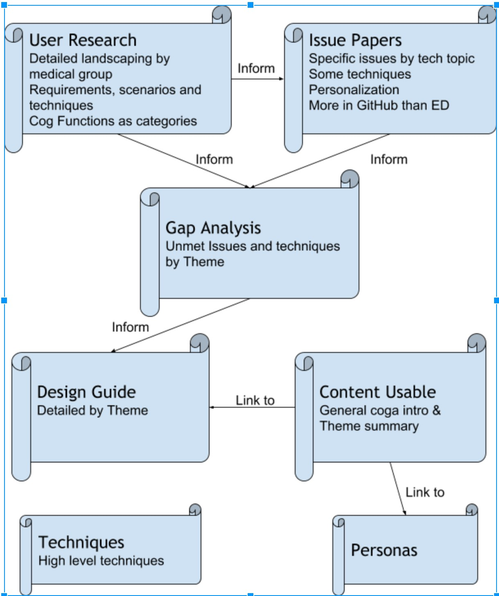

Strategies, standards, resources to make the Web
accessible to people with disabilities
Cognitive Accessibility Resource Guide
W3C WAI Cognitive Accessibility Resources
Cognitive accessibility is highly personal and covers a wide
range of requirements and barriers. The W3C WAI have developed
several large, detailed resources which can be hard to navigate.
This page is designed to provide with pointers to topics you
should find interesting according to your interests.

The main Coga resources and their relationships
Show Me
Select the guides from below according to what you want to do:
Back to Top